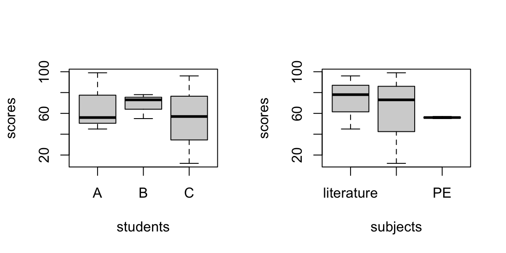
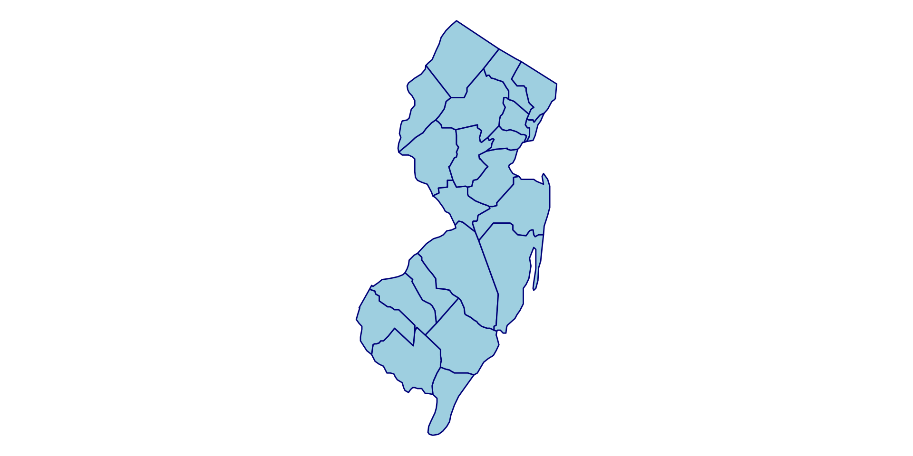
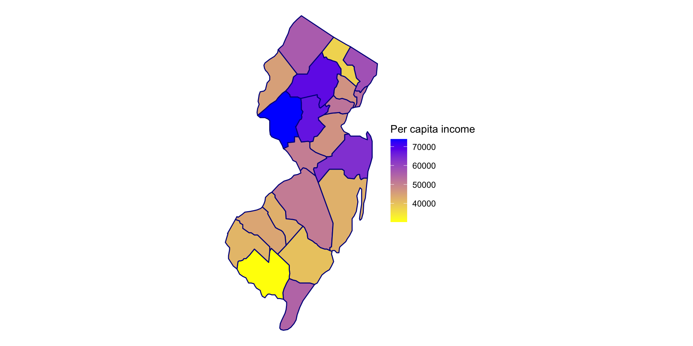
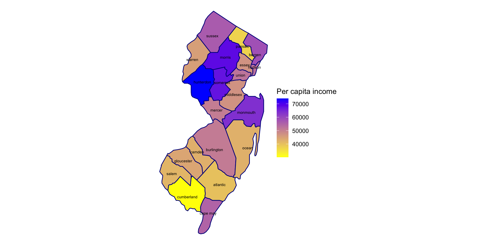

Data: running mileage and map examples
“Tidy data sets are all alike; but every messy data set is messy in its own way.” - Hadley Wickham
Ozone Solar.R Wind Temp Month Day
1 41 190 7.4 67 5 1
2 36 118 8.0 72 5 2
3 12 149 12.6 74 5 3
4 18 313 11.5 62 5 4
5 NA NA 14.3 56 5 5
6 28 NA 14.9 66 5 6Important features:
Datasets with these features are referred to as “tidy data” (or “long data”). Most functions in R (esp. in the tidyverse packages) expect your data to be in the tidy format.
Tidy data is not a mathematically defined concept; the best way to format data is subjective and based on the goal of the project.
| Week of | M | T | W | Th | F | Sa | Su | Weekly total |
|---|---|---|---|---|---|---|---|---|
| 9/7/26 | 3 | 0 | 0 | 0 | 4 | 3.5 | 11.5 | 22 |
| 9/14/26 | 5 | 0 | 7 | 0 | 5 | 0 | 18 | 35 |
| 9/21/26 | 0 | 5 | 5 | 0 | 20 | 0 | 6 | 36 |
| 9/28/26 | 4.5 | 0 | 12 | 6 | 6 | 6 | 4.5 | 39 |
| 10/5/26 | 0 | 0 | 0 | 4 | 20 | 0 | 14 | 38 |
| 10/12/26 | 0 | 4.5 | 0 | 6 | 3.5 | 16 | 0 | 30 |
| 10/19/26 | 2 | 0 | 4 | 0 | 5 | 0 | 12 | 23 |
| 10/26/26 | NYC marathon |
What can we do to improve the format of th,is data?
| country | 1999 | 2000 |
|---|---|---|
| Afghanistan | 745 | 2666 |
| Brazil | 37737 | 80488 |
| China | 212258 | 213766 |
| country | 1999 | 2000 |
|---|---|---|
| Afghanistan | 19987071 | 20595360 |
| Brazil | 172006362 | 174504898 |
| China | 1272915272 | 1280428583 |
What can we do to improve the format of this data?
# A tibble: 3 × 3
country `1999` `2000`
<chr> <dbl> <dbl>
1 Afghanistan 745 2666
2 Brazil 37737 80488
3 China 212258 213766# A tibble: 6 × 3
country year case.number
<chr> <chr> <dbl>
1 Afghanistan 1999 745
2 Afghanistan 2000 2666
3 Brazil 1999 37737
4 Brazil 2000 80488
5 China 1999 212258
6 China 2000 213766Exercise: convert table4b to the following format
# A tibble: 6 × 3
country year population
<chr> <chr> <dbl>
1 Afghanistan 1999 19987071
2 Afghanistan 2000 20595360
3 Brazil 1999 172006362
4 Brazil 2000 174504898
5 China 1999 1272915272
6 China 2000 1280428583Run the following code to create a data frame of exam scores. What would the long format look like? Use R to convert it to the long format and call it df.score.long.
student math literature PE
1 A 99 45 56
2 B 73 78 55
3 C 12 96 57# these code are equivalent
df.score %>% pivot_longer(cols = 2:4, names_to = "subject", values_to = "score")
df.score %>% pivot_longer(cols = c(math,literature,PE), names_to = "subject", values_to = "score")
df.score %>% pivot_longer(cols = math:PE, names_to = "subject", values_to = "score")
df.score %>% pivot_longer(cols = -student, names_to = "subject", values_to = "score")As an example, try generating the following graphs with df.score, and then with df.score.long. Which format is easier?

# --------------------------------------------------- #
# Long format: code for both graphs are very similar
# --------------------------------------------------- #
boxplot(df.score.long$score ~ df.score.long$student,
xlab='students',
ylab='scores')
# OR #
df.score.long %>% ggplot(aes(x=student, y=score)) +
geom_boxplot() +
theme_minimal()
boxplot(df.score.long$score ~ df.score.long$subject,
xlab='subjects',
ylab='scores')
# OR #
df.score.long %>% ggplot(aes(x=subject, y=score)) +
geom_boxplot() +
theme_minimal()
# --------------------------------------------------- #
# Short format: not easy with ggplot; base R coding is not unified
# --------------------------------------------------- #
boxplot(as.numeric(df.score[1,2:4]),
as.numeric(df.score[2,2:4]),
as.numeric(df.score[3,2:4]))
boxplot(df.score$math,df.score$literature,df.score$PE)# A tibble: 9 × 3
student subject score
<chr> <chr> <dbl>
1 A math 99
2 A literature 45
3 A PE 56
4 B math 73
5 B literature 78
6 B PE 55
7 C math 12
8 C literature 96
9 C PE 57# A tibble: 3 × 4
student math literature PE
<chr> <dbl> <dbl> <dbl>
1 A 99 45 56
2 B 73 78 55
3 C 12 96 57What exactly is mymap? Try some information extraction/visualization

'data.frame': 22 obs. of 5 variables:
$ County : chr "Hunterdon" "Morris" "Somerset" "Monmouth" ...
$ Per_capita_income: int 73936 68227 67395 63610 58150 56363 54906 52911 52208 51272 ...
$ Median_household : int 142518 131795 135577 118194 114336 113640 84870 83056 98028 96346 ...
$ Population : int 129777 511151 346875 644098 952997 146084 95634 703366 569815 9261699 ...
$ Number_households: int 50515 194141 130178 253767 354937 58885 48563 304526 202575 3516978 ...We want to combine these two existing data:
County Per_capita_income Median_household Population Number_households
1 Hunterdon 73936 142518 129777 50515
2 Morris 68227 131795 511151 194141
3 Somerset 67395 135577 346875 130178 long lat group order region subregion
1 -74.98299 39.51690 1742 51277 new jersey atlantic
2 -74.89132 39.58566 1742 51278 new jersey atlantic
3 -74.70797 39.73462 1742 51279 new jersey atlantic long lat group order region subregion Per_capita_income
1 -74.98299 39.51690 1742 51277 new jersey atlantic 40034
2 -74.89132 39.58566 1742 51278 new jersey atlantic 40034
3 -74.70797 39.73462 1742 51279 new jersey atlantic 40034
Median_household Population Number_households
1 77248 275638 106972
2 77248 275638 106972
3 77248 275638 106972Now we can do all the fun stuff like visualizing a map. Also, note here that you can store a ggplot like a regular R object. This is not the case with base R plots.

We set text=subregion in the previous ggplot. The goal is to show the county names on the map as text. This is very easy with an interactive graph: the ggplotly( ) function in the plotly package allows you to convert an existing ggplot to an interactive version.
To do the same graph with non-interactive ggplot is not as easy, since you have to specify exactly where to put each of the text.
# calculate average longitude and latitude for text coordinate
county_labels <- mymap.nj %>%
group_by(subregion) %>%
summarize(
long = mean(long),
lat = mean(lat),
.groups = "drop"
)
# add text
p1 +
geom_text(data = county_labels,
aes(x = long, y = lat, label = subregion),
inherit.aes = FALSE,
size = 2)
Exercise:
name exam project
1 A 80 1
2 B 91 2
3 C 85 1
4 D 78 NA projectID description
1 1 visualization
2 2 classification
3 3 text mininginner_join(df.student, df.project, by=c('project' = 'projectID'))
left_join(df.student, df.project, by=c('project' = 'projectID'))
left_join(df.project, df.student, by=c('projectID' = 'project'))
right_join(df.student, df.project, by=c('project' = 'projectID'))
full_join(df.student, df.project, by=c('project' = 'projectID'))